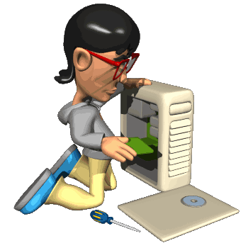

Mi primera página web, creada con lo básico del código HTML, primera prueba
H7 no existe en HTML

INTRODUCCIÓN DE UN VIDEO
Debemos tener listo nuestro video en la carpeta en que nos encontramos trabajando; para poder copiar o introducir la dirección; además es importante observar que el formato sea mp4.
La marca Nike destaca globalmente por el diseño e innovación en calzado deportivo e indumentaria de alto rendimiento para todo tipo de atletas. En su sitio web oficial es posible explorar colecciones exclusivas, calzado especializado y tecnologías avanzadas en prendas. Es una plataforma esencial para conocer las últimas tendencias en moda urbana y equipamiento deportivo mundial.
Sony Corporation es un referente clave en la industria del entretenimiento, tecnología de consumo y desarrollo audiovisual de vanguardia. En su portal oficial los usuarios pueden acceder a detalles de consolas de videojuegos, sistemas de sonido, cámaras y pantallas de alta definición. Además ofrece soporte técnico directo, manuales y actualizaciones constantes para sus productos.
Rockstar Games destaca en el sector de los videojuegos por crear mundos abiertos detallados con narrativas profundas y mecánicas envolventes. Su portal de internet permite seguir las últimas noticias sobre lanzamientos, eventos especiales de la comunidad y mercancía coleccionable. Es la fuente principal para mantenerse al día con las novedades de sus franquicias más populares.
El mantenimiento de computadoras es el conjunto de actividades, técnicas y procedimientos periódicos destinados a prevenir, diagnosticar y corregir fallas en el hardware (componentes físicos) y software (sistema operativo y programas) de un equipo informático, con el fin de garantizar su óptimo rendimiento, seguridad y prolongar su vida útil.
El mantenimiento preventivo de computadoras es el conjunto de acciones técnicas, revisiones y limpiezas rutinarias que se realizan a un equipo informático de forma programada para anticiparse a posibles fallas, reducir el desgaste de los componentes físicos (hardware) y optimizar el rendimiento del sistema (software) antes de que ocurran problemas graves.

© 2006 All rights reserved.
POWERED BY COJAG